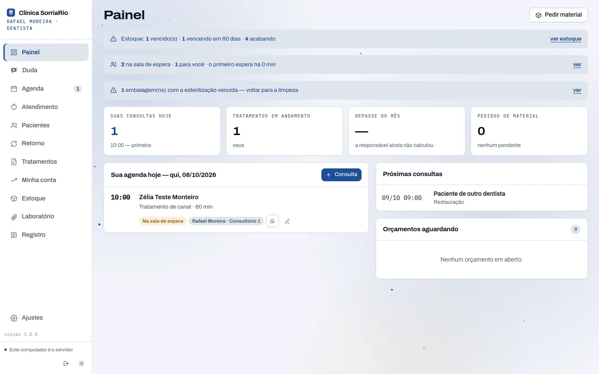
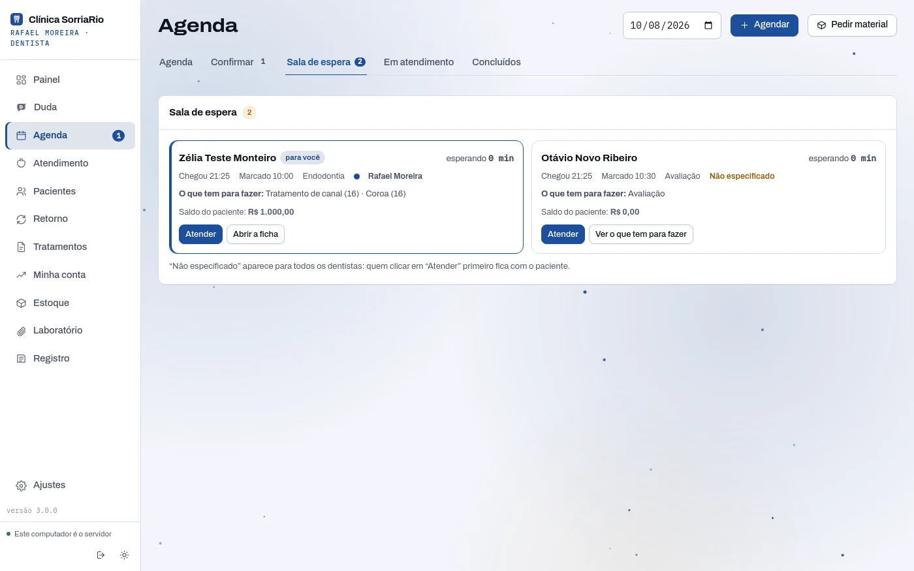
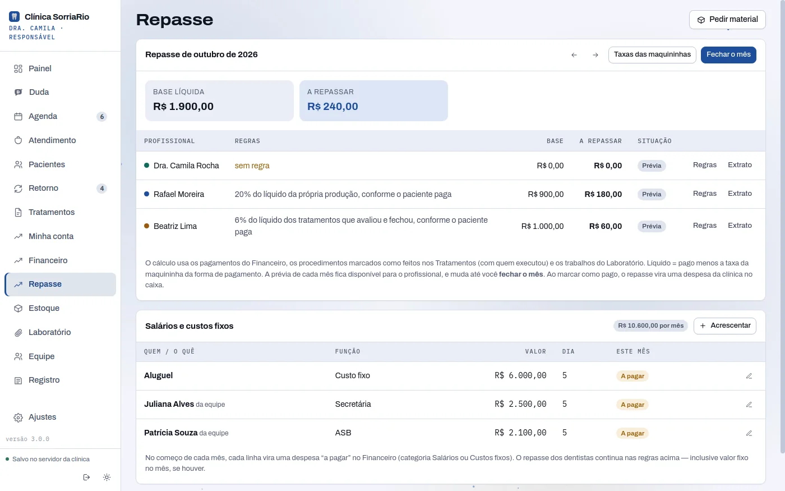
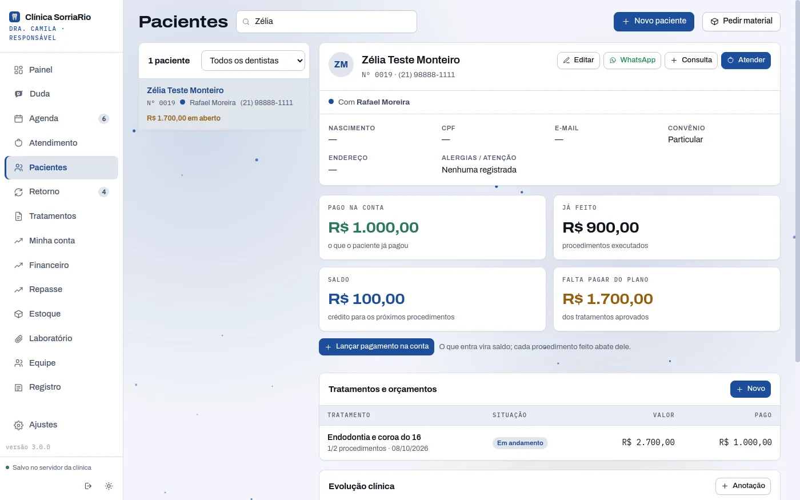
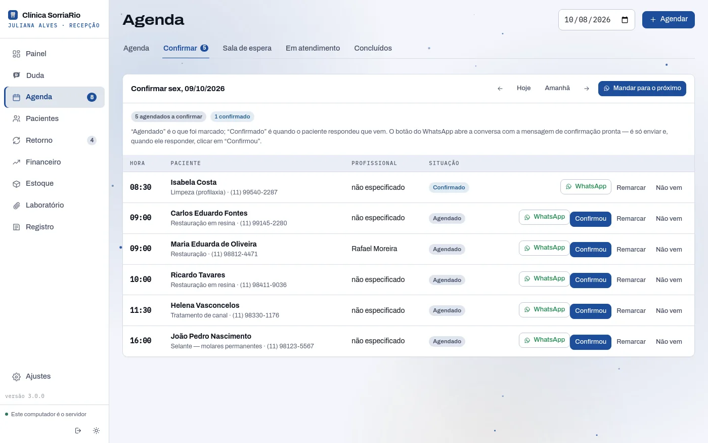
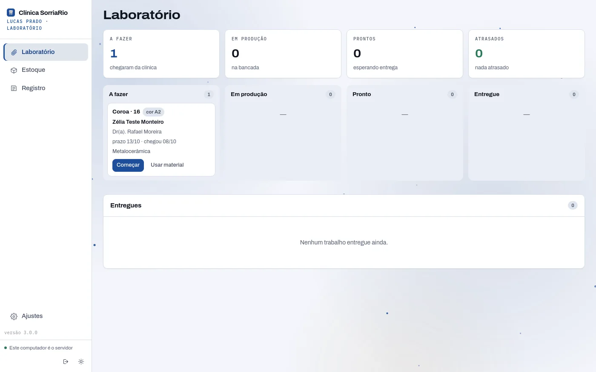
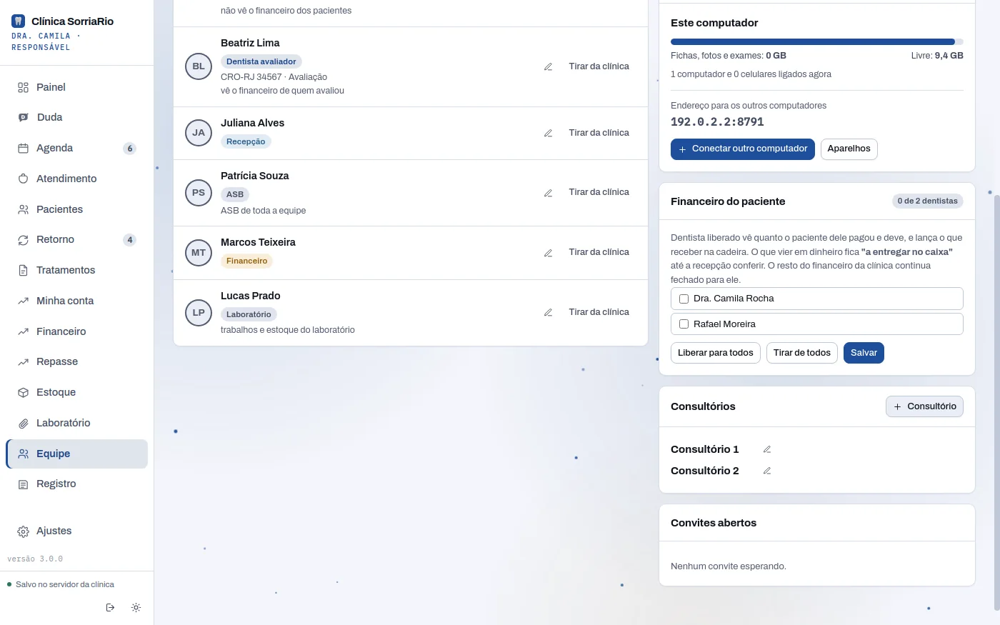

A clínica inteira no mesmo sistema — e cada um só com a sua chave.
Dentistas, recepção, ASB, financeiro e laboratório, cada um com o próprio acesso e vendo só o que o papel permite. Sala de espera ao vivo, repasse por profissional e o servidor no computador da recepção. As fichas continuam cifradas — agora, uma chave por paciente.
De 2 a 8 dentistas, equipe ilimitada. Fase de testes: 1º mês grátis e 5% a mais de desconto, para sempre, para as clínicas testadoras.

Em Ajustes › Transformar em clínica, o programa instala a Clínica ao lado e leva os seus pacientes: vai o cofre cifrado, do jeito que está, e ele abre na Clínica com a mesma senha. O Solo continua intacto.
Sala de espera
Quem chegou, há quanto tempo espera, para quem.
A recepção marca a chegada; o paciente aparece na hora para todos os dentistas, com o horário marcado, a especialidade e o saldo. O primeiro dentista que clicar em Atender fica com ele.
- Chegou, esperando, em atendimento e concluídos — ao vivo, em todos os computadores.
- Encaminhar para outra especialidade no mesmo dia: o paciente volta para a sala, sem perder a fila.
- Só finaliza com o retorno marcado, o encaminhamento ou a alta com revisão em 3 ou 6 meses.

Repasse
Cada profissional com a sua regra.
A responsável define a regra de cada um: porcentagem da produção, porcentagem de avaliação conforme o paciente paga, valor por procedimento ou fixo. O mês fecha sozinho, com a prévia sempre à vista.
- Taxas das maquininhas descontadas antes da porcentagem.
- Conta corrente do dentista: produção, repasse do mês e o que falta receber.
- Salários e custos fixos viram despesa todo mês, sem ninguém lembrar.

Conta do paciente
Pagou, fez, sobrou.
A recepção lança o pagamento na conta e cada procedimento feito abate do saldo. O dentista de produção vê o saldo do paciente dele — sem ver os pagamentos de ninguém.
- Pago, já feito, saldo e o que falta do plano, lado a lado na ficha.
- Avaliador ganha sobre o tratamento que fechou, conforme o paciente paga.
- Consulta avulsa, paga na hora, fica fora do saldo.

Agenda
Agendado não é confirmado.
A aba Confirmar separa quem só marcou de quem respondeu. Um clique abre o WhatsApp com a mensagem pronta; quando o paciente responde, outro clique e está confirmado.
- Agenda por dentista e por consultório, configurável pela responsável.
- Confirmar o dia seguinte inteiro, do primeiro ao último.
- Retornos e revisões aparecem sozinhos na lista de quem chamar.

Laboratório e estoque
O protético também entra — e só no que é dele.
Laboratório próprio com login: o quadro de A fazer, Em produção, Pronto e Entregue, com o nome do paciente e do dentista. A ASB recebe o pedido de material com aviso grande, que só sai quando ela entrega.
- Estoque de consumo e de instrumentais: contaminado, limpeza, autoclave, disponível.
- O que é entregue já dá baixa no estoque.
- Trabalho atrasado e consulta marcada antes do prazo aparecem em destaque.

O servidor da clínica
Quanto espaço o servidor vai precisar?
Fichas cifradas são pequenas; quem ocupa espaço são as fotos e as radiografias. Mude os números e veja na hora — o que conta para o servidor da recepção.
Quem vê o quê
Sete papéis. Cada um com as chaves do que precisa — e só delas.
Não é tela escondida: é criptografia. Cada paciente tem a própria chave, e ela só é entregue a quem atende aquele paciente. Quem sai da equipe perde as chaves na hora, e o Registro guarda quem abriu o quê.
| Papel | Vê | Faz |
|---|---|---|
| Responsável | Tudo: equipe, repasse, salários, regras, backup e o registro de acessos. | Convida e tira gente da equipe, define o que cada um vê, fecha o mês do repasse. |
| Dentista de produção | Os pacientes dele e os liberados para todos. O saldo do paciente, sem os pagamentos. | Evolução, receitas, atestados e termos com o CRO dele; a conta corrente com a produção do mês. |
| Dentista avaliador | Os pacientes que avaliou — com o financeiro deles. | Plano de tratamento, orçamento e condições de pagamento; ganha sobre o que fechou e foi pago. |
| Recepção | Agenda, cadastro, valores e a conta do paciente. Nunca o prontuário. | Confirma consultas pelo WhatsApp, marca a chegada na sala de espera e lança os pagamentos. |
| ASB | Anamnese e odontograma em leitura e o planejado para o dia. | Recebe o pedido de material com aviso grande e dá baixa no estoque; cuida da esterilização. |
| Financeiro | Caixa, despesas, repasses e salários. | Confere, paga e fecha o mês — sem abrir ficha clínica. |
| Laboratório | Os trabalhos e o estoque do laboratório próprio. | Move cada peça de A fazer a Entregue, com o nome do paciente e do dentista. |
O servidor é o computador da recepção
Sem nuvem de ninguém. Também na clínica.
O computador da recepção guarda o cofre da clínica e atende os outros pela rede, com um código de 8 dígitos para ligar cada um. Servidor desligado: os outros continuam abrindo e lendo, e voltam a gravar sozinhos quando ele volta.
De casa, só dentistas e a responsável — pelo mesmo caminho privado que o celular usa, sem abrir nada na internet. O backup na nuvem, se ligado, é o mesmo bloco cifrado: uma caixa que não temos como abrir.

A Duda vem junto
A assistente de IA também está na Clínica.
Evolução escrita a partir da anotação rápida, mensagem pronta para o paciente, a resposta sobre qualquer tela do programa — e o nome do paciente sempre fica no computador da clínica.
Planos da Clínica
Por número de dentistas. A equipe não paga.
Recepção, ASB, financeiro e laboratório entram de graça. Os descontos são os de sempre — 20% no trimestral, 25% no semestral, 30% no anual e mais 3% com cobrança automática.
Mais de 8 dentistas?
Fazemos um orçamento sob medida — e a implantação junto. Respondo em até 1 dia útil.
Fase de testes
Procuro clínicas para testar comigo.
O primeiro mês é grátis e, depois, 5% a mais de desconto em qualquer plano, para sempre. Em troca, peço o uso de verdade no dia a dia e a sua opinião sem filtro. A implantação, eu faço junto.